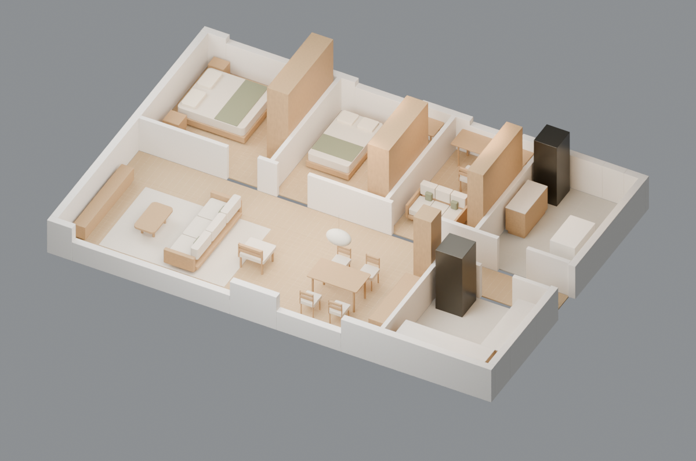
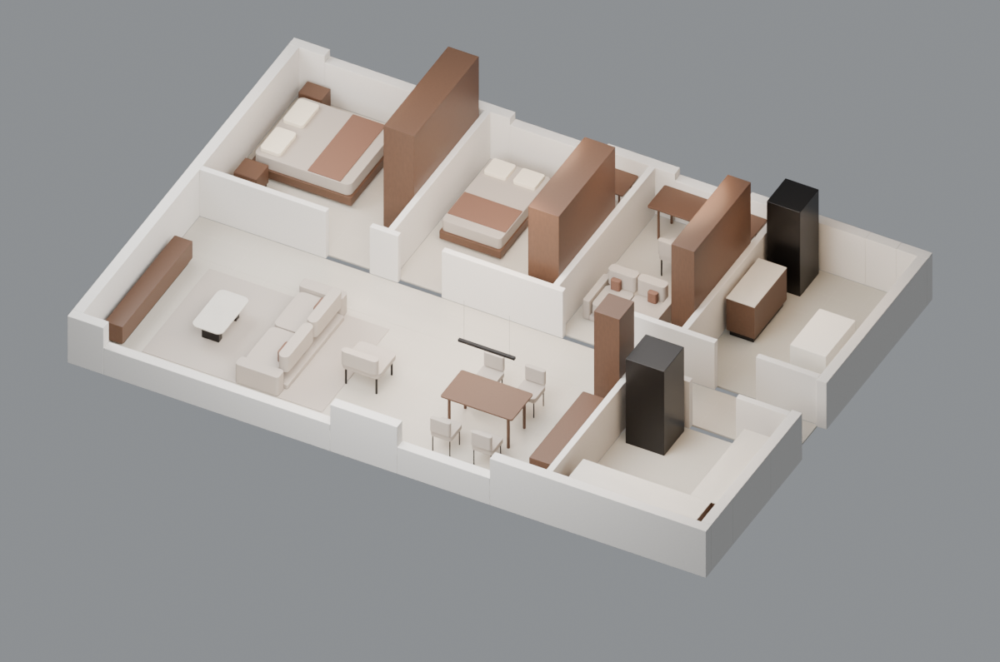
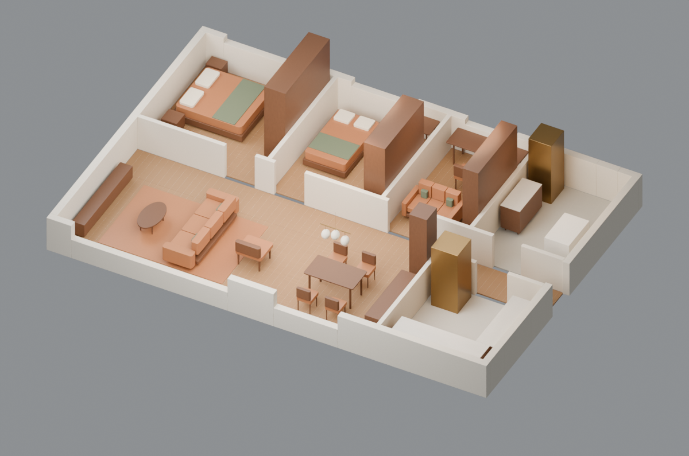

比较家具轮廓、柜门、灯具与材质。四套使用同一户型；极简白模已更新为v4清晰度优化版：加强局部明暗、收紧硬质边缘，输出2400×1800图像。
查看白模v3 → v4清晰度前后对比 · 历史：白模v2参考对比
浅木框架 · 亚麻质感 · 圆角茶几 · 纸灯罩

Blender模型 · GLB模型 · 渲染记录
低矮模块沙发 · 石质台面 · 简洁柜门 · 线性吊灯

细腿沙发 · 椭圆茶几 · 框式柜门 · 黄铜球形吊灯

清晰硬质边缘 · 白灰明暗分层 · 高分辨率 · 通透玻璃与暖光。客厅使用完整近景。
Blender模型 · GLB模型 · 客厅样板轴测 · 客厅原机位 · v4渲染记录
白模为v4清晰度优化版；点击图片可查看高分辨率原图。尺寸与费用为设计设定，风格候选不代表客户确认或实际选品。